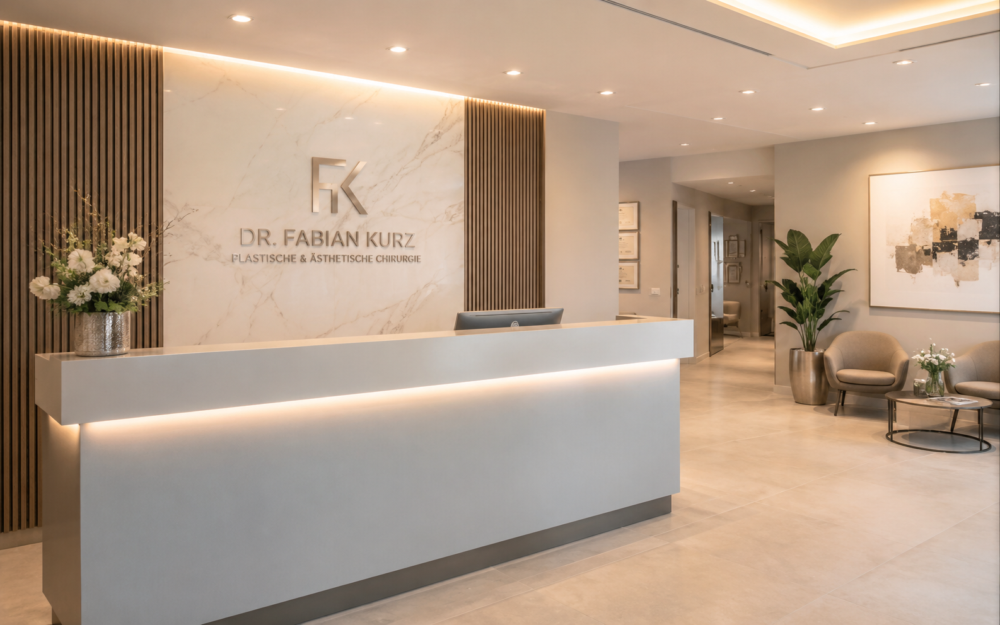

Kontakt
Diskret Kontakt aufnehmen
Für Fragen, Terminwünsche oder eine erste Orientierung erreichen Sie die Praxis telefonisch, per E-Mail oder über das Anfrageformular.
Privatpraxis Prof. Dr. Jürgen Dolderer
Adresse
Musterstraße 1
60311 Frankfurt am Main
Telefon
+49 69 1234567
E-Mail
info@dr-dolderer.de
Sprechzeiten
Montag bis Freitag nach Vereinbarung
Kartenbereich / Google Maps später einfügen

Ankommen in ruhiger Atmosphäre
Der Empfangsbereich soll Orientierung, Diskretion und eine hochwertige Praxisatmosphäre vermitteln.